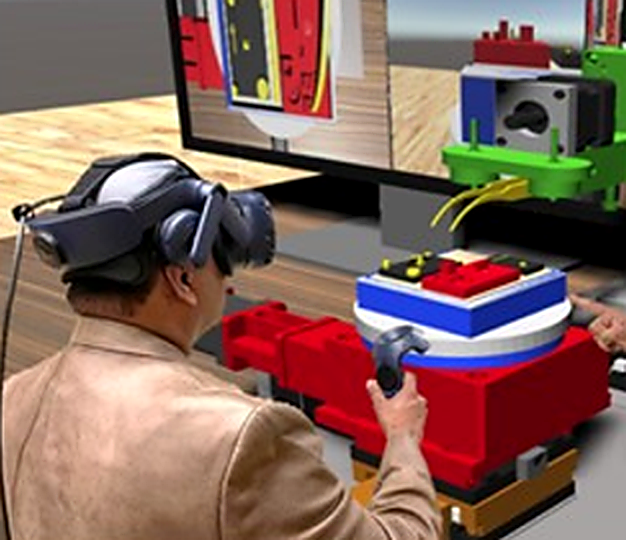
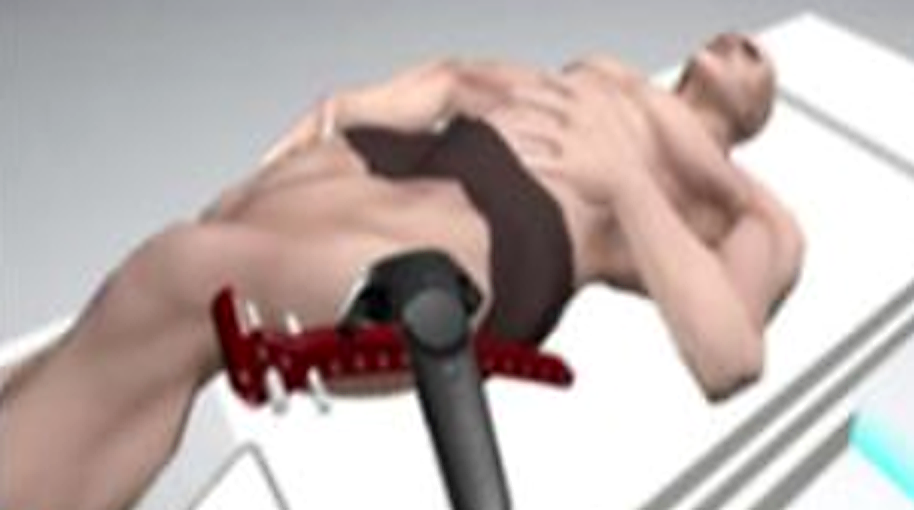
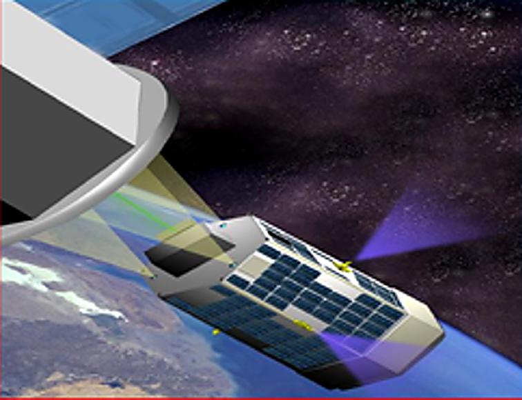
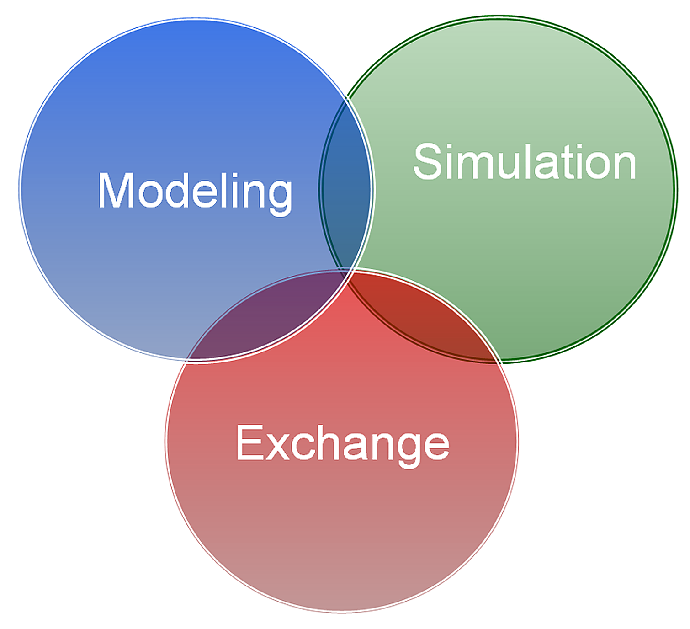

Cyber Tech
Cognitive Solutions for the interconnected cyber-human-physical metaverse.



MISSION AND SERVICES
We specialize in manufacturing automation, robotics assembly, healthcare / medicine and space systems.
Ready to harness the power of AI and related cognitive technologies?
The information-centric and Artificial Intelligence (AI)-based revolution is well underway globally. Cyber Tech is a global leader who can transform your organization’s ability to perform engineering, manufacturing and medical functions by adopting cognitively enhanced and intelligent solutions.
We serve customers in several domains: manufacturing, robotics, healthcare / medicine and space systems. We can develop software solutions for your process applications as well as create more advanced cyber-physical tools taking into consideration human-in-the-loop attributes. The latter can be viewed as cyber-human-physical tools, which support human interactions involving cyber-physical environments in various domains.
With the AI, XR and Smart Robotics revolution well underway, organizations need to adopt such next-generation approaches and technologies to remain competitive. This is where Cyber Tech comes in. We are experts in creating cognitively enhanced tools which support the accomplishment of a diverse array of engineering and medical services.
We can transform your enterprise by analyzing your current needs and developing a specific solution for a given manufacturing or healthcare context; or we can go further, by developing an enterprise-level plan to transform your organization to function in a more cognitive and intelligent manner. This can be achieved through the introduction of a process which relies on sensing, perception, reasoning and learning. This is the Cognitive Advantage™, which harnesses the power of AI, Extended Reality and Human-Centered Computing to transform your organization.
Specifically, we can develop customized tools which harness the power of AI, Extended Reality (XR) technologies, Internet of Things (IoT), among others. XR encompasses three mediums: Virtual Reality (VR), Augmented Reality (AR), and Mixed Reality (MR).
What makes us unique is our ability not simply to create a stand-alone solution for a specific process but to design and build a complex framework at the process or enterprise level, which establishes a strong and unique foundation that allows your organization to expand its capabilities in a structured manner.
When we build our solutions for your enterprise, we also incorporate and integrate unique human-centered capabilities that allow your team members to function at their highest capabilities.
Our software tools and frameworks are designed to ensure they are user-friendly and can help your team accomplish their engineering and medical activities in an effective and user-friendly manner.
Based on our own groundbreaking research, we have built advanced cyber-physical tools and systems for robotics and surgery based on innovative Human-Computer Interaction (HCI) principles. This enhances the level of user-friendliness while reducing the mental effort (or cognitive load) on our customers when using our products and tools.
Our next-generation tools and consulting services provide a unique collection of benefits including:
- reduction in associated engineering costs and lead time through use of digital twins aimed at identifying infeasible ideas, eliminating bottleneck processes and increasing your ability to rapidly perform ‘what if’ analysis to identify the best process alternatives
- faster identification of problems in manufacturing or engineering your product (you can achieve this before physically performing a task or physically building a system)
- improved knowledge and skills of users for procedures or methods in various domains (our digital twins for surgery or manufacturing, among others, can help train users, doctors and engineers)
- providing process and user feedback using advanced HCI-oriented criteria which improves overall user experience at a reduced cognitive load
- substantial cost reduction in the development of a new process be it in engineering, manufacturing or medical surgery
Our engineering team is composed of pioneers and global leaders in creating XR-based digital twins for various domains and building advanced simulators for cyber-human-physical interactions for three major domains.
- smart and cognitive manufacturing
- Smart health and medicine (surgery, medical robotics)
- space systems
Our team has experience creating such advanced tools and environments for manufacturing, surgical training and near- and deep-space missions. Our competitors lack the structured foundation and unique process our experts have developed to design, build and validate such information-centric tools. An overview of some of these tools is provided for manufacturing, healthcare and space systems. However, our services and tools extend beyond these domains, from creating simulators to test the functioning of automated car and transport systems to creating information-rich enterprise models which are needed to fully understand the complex relationships in any engineering, medical or service domain.

COGNITIVE ENGINEERING
Designing Cognitive Engineering solutions based on pioneering research.
Our tools and services are based on an extensive research foundation involving some of the world's leading researchers.